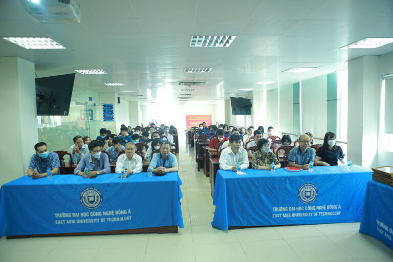
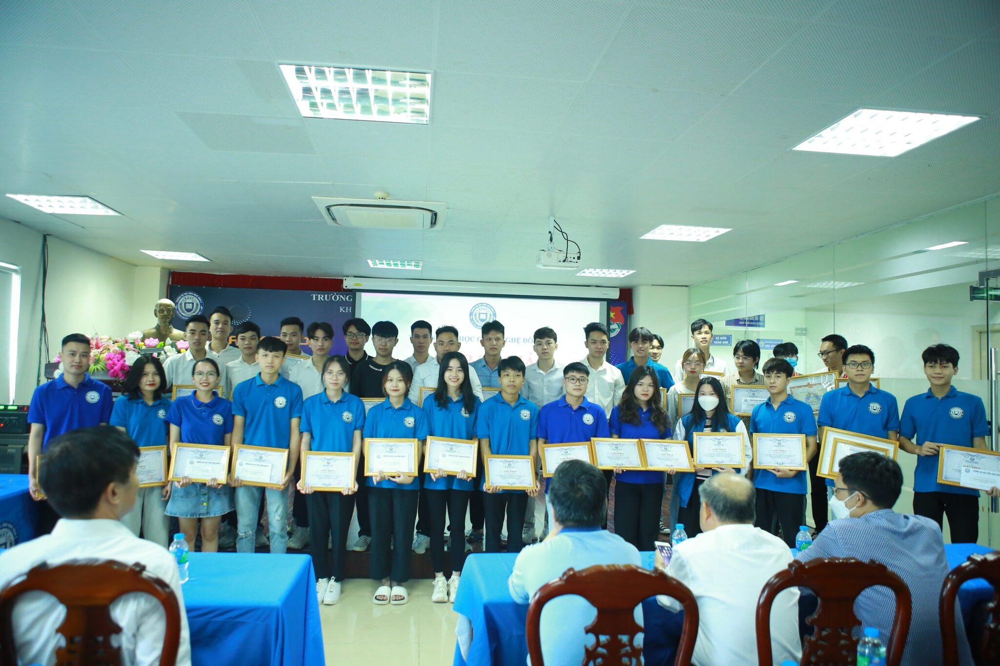

Trao thưởng các sinh viên đạt giải trong Cuộc thi Olympic toán học Quốc gia 2022 và hội nghị sinh viên nghiên
cứu
khoa học Đại học Công nghệ Đông Á năm học 2021-2022
Chiều qua diễn ra lễ trao thưởng dành cho cho các bạn sinh viên đạt thành tích cao trong cuộc thi Olympic
toán học quốc gia năm 2022 và Hội nghị sinh viên nghiên cứu khoa học trường Đại học Công nghệ Đông Á năm học
2021-2022.
Với mục đích góp phần nâng cao chất lượng dạy và học toán, thúc đẩy phong trào học toán trong học sinh, sinh
viên, phát hiện bồi dưỡng các sinh viên giỏi toán tại Trường Đại học Công nghệ Đông Á. Khuyến khích sinh viên
nghiên cứu khoa học và vận dụng những kiến thức đã học vào giải quyết những vấn đề thực tiễn của cuộc sống. Đồng
thời phát huy năng lực tư duy sáng tạo, khả năng làm việc độc lập, làm việc theo nhóm và hình thành năng lực tự
học, tự nghiên cứu cho sinh viên.

Chiều ngày 13/06 Phòng nghiên cứu Khoa học được tổ chức buổi lễ trao thưởng cho các bạn sinh viên đạt thành tích
cao trong cuộc thi Olympic toán học quốc gia năm 2022 và Hội nghị sinh viên nghiên cứu khoa học trường ĐHCN Đông
Á năm học 2021-2022. Bao gồm:
Các sinh viên xuất sắc giành được giải trong cuộc thi cuộc thi Olympic toán học quốc gia năm 2022
- Nguyễn Đình Huy (Lớp DCOT11.10.4): Giải Ba môn Đại số
- Nguyễn Năng Anh (Lớp DCCNTT12.10.6): Giải Ba môn Đại số
- Vũ Thiên Dương (Lớp DC.IT.12.10): Giải Khuyến Khích môn Giải Tích
Các sinh viên đã đạt giải trong Hội nghị sinh viên nghiên cứu khoa học ĐH Công Nghệ Đông Á năm học 2021-2022
- Giải Nhất
- Đề tài “Phát video 360 độ trực tuyến trên luồng HTTP/2”–Phạm Anh Tuấn (DCCNTT10.10.2) & Trần Thị Hải
Yến (Lớp DCCNTT11.10.6)
- Đề tài “Nghiên cứu, xây dựng sa bàn hệ thống điều hòa trên xe ô tô”– hạm Văn Dương (Lớp DCOT11.10.3)
& Lại Đức Thuận (Lớp DCOT11.10.3) & Chu Đức Duy (Lớp DCOT11.10.3)
- Đề tài “Nghiên cứu xe robot tự hành phun khử khuẩn y tế có điều khiển từ xa”–Lê Tiểu Niên (Lớp
DCTĐH9.10)
- Giải Nhì
- Đề tài “Phương pháp ước tính chế độ xem trực tuyến video 360 sử dụng Deep Learning”–Đào Thu Ngân
(Lớp DCCNTT10.10.2) & Trương Thị Dịu (Lớp DCCNTT9.10.IT2)
- Đề tài “Nghiên cứu sản xuất bánh mì không gluten ứng dụng trong thực tiễn”–Lê Thị Mai Phương, Nguyễn
Thị Thu Hiền, Đồng Văn Tiến, Quàng Văn Đạt (Lớp DCCNTP10.10)
- Đề tài “Nghiên cứu về tài nguyên du lịch văn hóa trên địa bàn Hà Nội để phục vụ cho việc lựa chọn
điểm thực hành chuyên môn cho sinh viên khoa Du lịch-Trường Đại học Công nghệ Đông Á”–Trần Thị
Giang, Nguyễn Văn Thái, Nguyễn Thị Huyền (Lớp DCDLLH12.10.1)
- Giải Ba
- Đề tài “Nghiên cứu, thiết kế, chế tạo khung vỏ xe sinh thái tiết kiệm nhiên liệu” SV Nguyễn Mạnh
Hùng (Lớp DCOT10.10); Phạm Ngọc Cường (Lớp DC.CTM10.10); Ngô Quang Hiểu (Lớp DCOT10.10)
- Đề tài “Nghiên cứu và thiết kế mô hình bộ lưu điện thông minh”–SV Phạm Xuân Dũng (Lớp DC.TĐH 10.9)
- Đề tài “Nghiên cứu phương pháp tính toán và cấu tạo thép sàn ô cờ, áp dụng cho nhà nhiều tầng”–SV Lê
Quang Linh (Lớp DCXD9.10)
- Giải Khuyến Khích
- Đề tài “Phát triển thị trường tiêu thụ sản phẩm trầm hương sinh học của Công ty cổ phần trầm hương
sinh học TTT”–SV Trần Đức Hải; Lê Thị Lan Anh; Đinh Minh Hiếu (Lớp DCQTM.12.10.6)
- Đề tài “Phát triển nguồn nhân lực chất lượng cao và vấn đề đặt ra trong công tác đào tạo tại trường
Đại học Công nghệ Đông Á” Vũ Thị Thu; Đinh Văn Lý; Nguyễn Thị Thu Uyên (Lớp DCDLLH12.10.2)
- Đề tài “Thiết kế chế tạo máy sấy thăng hoa”–SV Nguyễn Công Viên; Nguyễn Mậu Việt; Hà Văn Hải (Lớp
DCKTN11.10)
- Đề tài “Nghiên cứu, thiết kế, chế tạo mô hình tàu ngầm chạy bằng điện”–SV Bùi Thế Vĩnh; Phạm Quốc
Tuấn; Đỗ Tiến Khải (Lớp DCOT11.10.3)

Phòng Nghiên cứu khoa học, Khoa cơ bản tổ chức cuộc thi olympic toán cấp trường trong 02 ngày 24 – 25 tháng 3 năm
2022 và đã lựa chọn được những sinh viên suất sắc nhất trong số những sinh viên tham dự cuộc thi Olympic toán
học sinh viên và học sinh năm 2022 với 02 môn thi là Đại Số và Giải tích diễn ra trong 02 ngày 23 – 24/05. Phòng
NCKH cùng với các khoa cũng đã tổ chức thành công hội nghị sinh viên nghiên cứu khoa học diễn ra vào ngày
23/05/2022.
EAUT luôn dành những phần thưởng xứng đáng cho những tài năng & nỗ lực của các bạn sinh viên. Hy vọng những giải
thưởng dành cho các sinh viên xuất sắc, các sinh viên làm nghiên cứu khoa học này sẽ truyền thêm cảm hứng và
động lực để các bạn sinh viên EAUT tự tin lựa chọn, thử sức đăng ký đề tài và tận lực học tập.